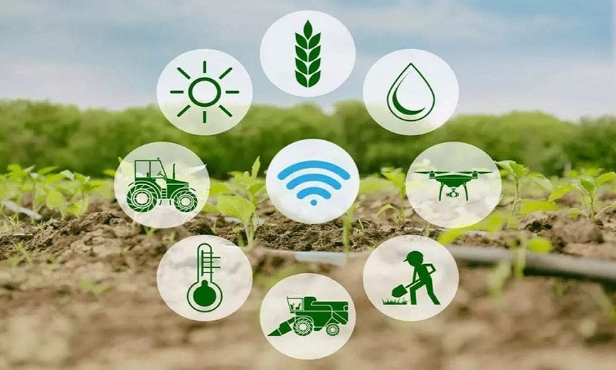

Tracking
We provide a platform for farmers to keep record of all their agricultural activities so that they can track their progress.

Compliance
Allows farmers to keep track of all the compliance requirements and ensure they are met. This provides proof for certification.

Certification
Farmers are awarded certificates once it is proven that they have met all the requirements.

Networking
Once a farmer is rightfully certified, he/she is privileged to access a premium market where they can sell their produce.